可检查的阅读工作台
Web Lite
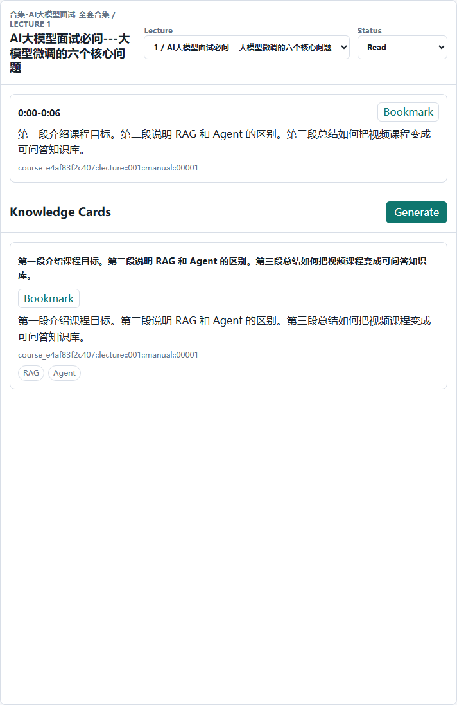
- 按 lecture 阅读转写证据。
- 搜索和 Q&A 都显示 citation。
- 笔记、书签、进度都落在同一个本地 course store。
作品展示 + 技术档案
Course2Knowledge Lite 把 Bilibili 合集拆成可引用的转写证据，组织成本地课程知识库，再同时交给 Web 深读前台和 Feishu/Hermes 问答前台。
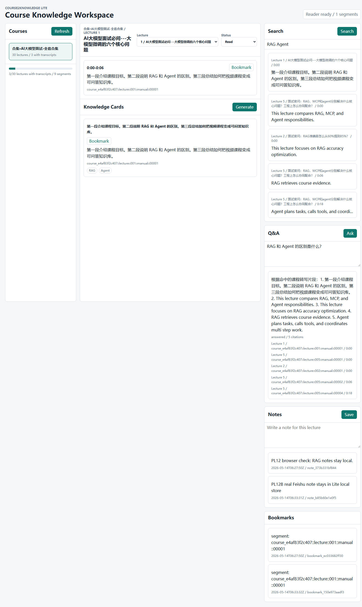
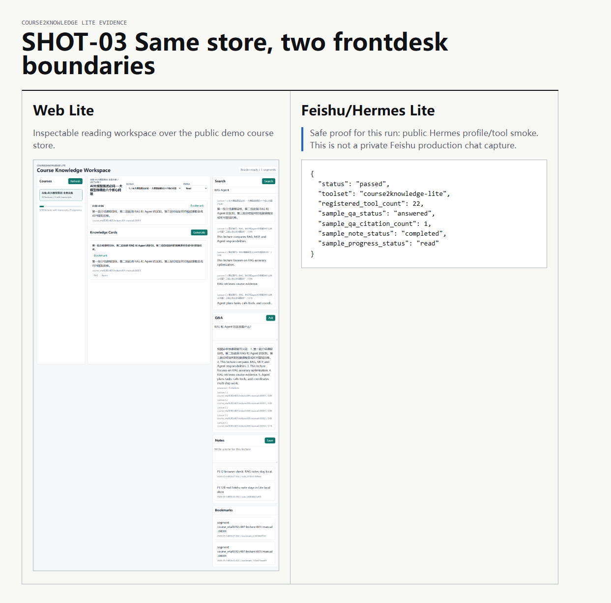
公开演示视频
这段视频由公开子仓库的真实截图和本地运行素材剪成：合集导入、课程展开、转写证据、Web 深读、引用问答、知识卡片、Hermes Lite smoke 都来自同一条公开案例链路。
真实案例链路
这次案例围绕同一个 Bilibili 合集：导入边界、转写证据、课程库、Web 前台和 Hermes 前台能力都留下了截图证据。页面展示的是实际跑出来的链路，不是概念图。
把 Bilibili season URL 作为公开导入边界。
得到有序 lecture、标题、BV/source URL 和 import receipt。
把 timestamped transcript segments 作为可引用学习证据。
持久化 course、lecture、segment、card、note、bookmark 和 progress。
在 Web Lite 里阅读、搜索、问答、生成卡片和记录状态。
通过公开 Hermes profile 验证同一工具边界可被对话前台调用。
One Store, Two Frontdesks

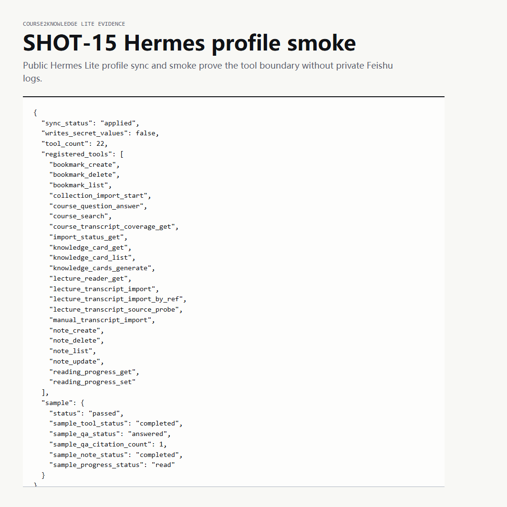
真实案例图
这些图来自刚才实际启动的 Web Lite、API bundle、本地 store、视觉证据和 Hermes profile smoke。飞书聊天图没有用生产聊天冒充，缺口在页面中明确标注。
真实 Web Lite 页面，展示课程、reader、搜索、Q&A、笔记、书签和进度。
realWeb 前台截图 + Hermes smoke 证据，证明同一 course store 的两个入口。
safe proofBilibili collection URL 被公开 Lite 导入边界接受。
real30 个 lecture 的 source ID、标题和 URL 被展开记录。
real本地 JSON course store 同时支撑 Web 和 Hermes 工具层。
realtimestamped transcript segments 带稳定 segment ID。
realWeb reader 打开一节有 transcript 的课程。
real`RAG Agent` 搜索命中 5 条 transcript 证据。
realQ&A answered，并显示 5 条 citations。
real卡片由 transcript segment 生成，并保留 source segment ID。
realnote 绑定 course 和 lecture，保留在 Lite local store。
realbookmark 指向 segment/card target。
realreading progress 被写入并可被 Web/API 读取。
real公开 profile sync/smoke 通过，22 个工具注册。
safe proofHermes Lite 选择公开课程图，解释后返回唯一 MEDIA 路径。
real同一 course store 在移动端可读。
real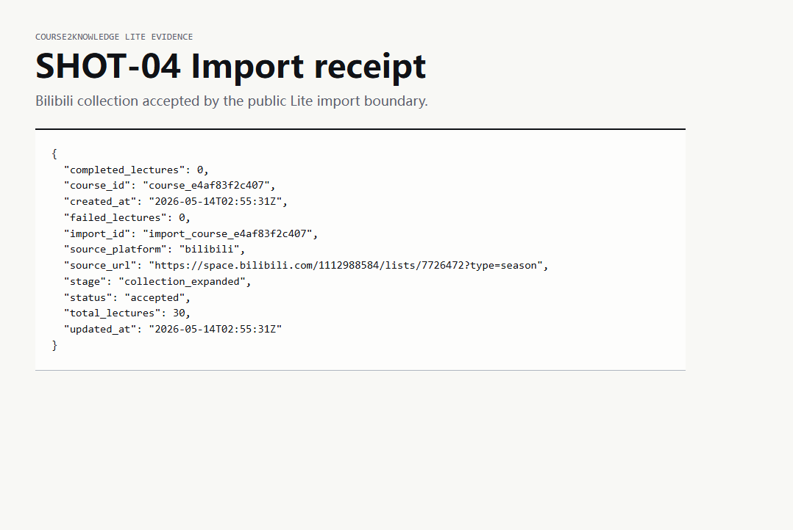
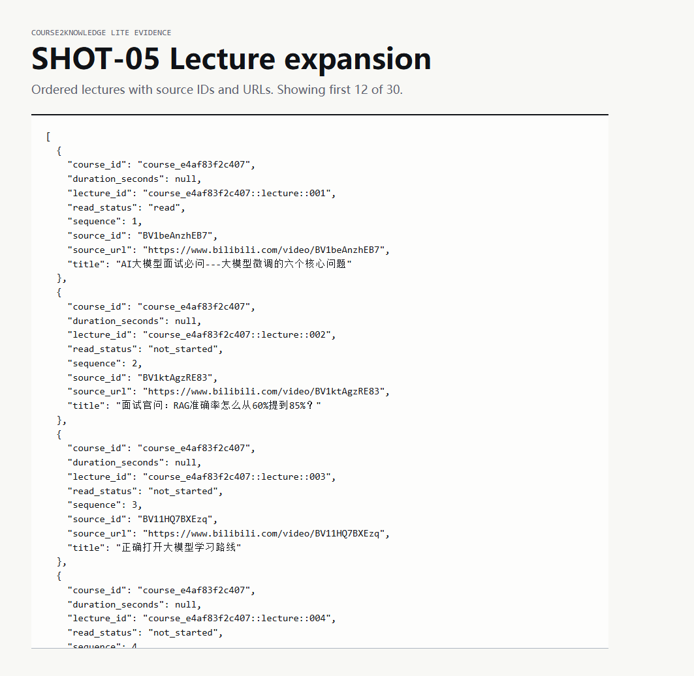
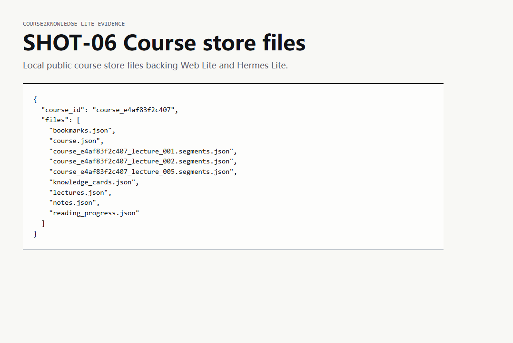
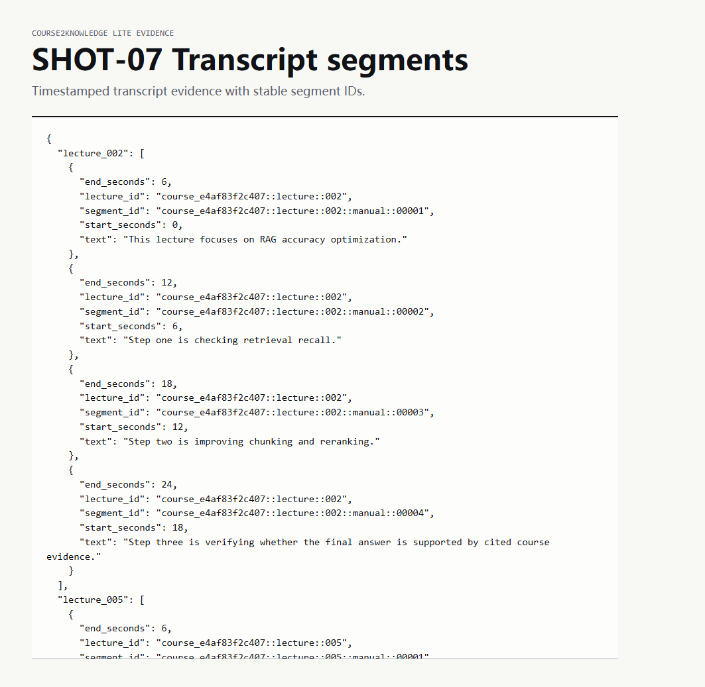
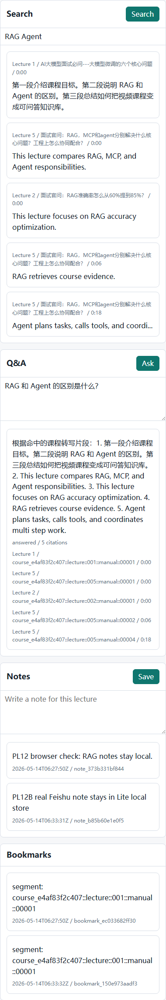
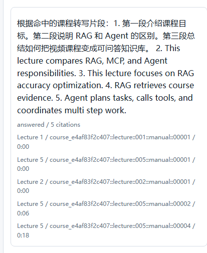
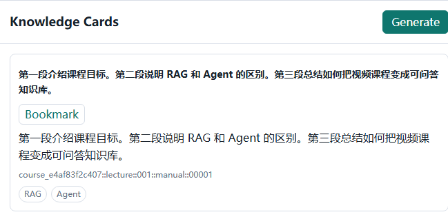
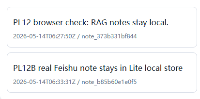
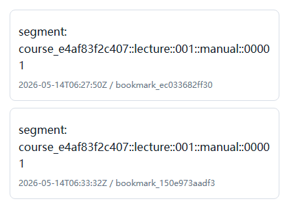
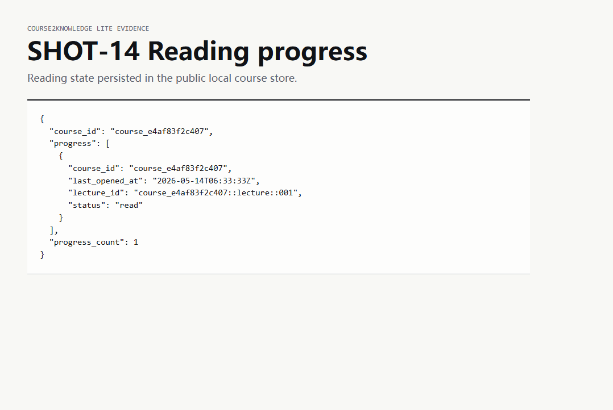
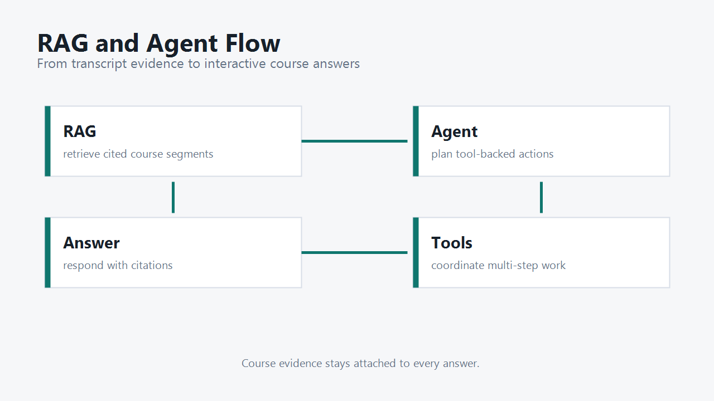
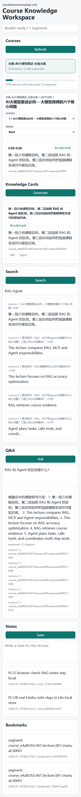
产品思想
Course2Knowledge Lite 做的事，是把播放器里的时间线拆成可引用证据，把证据组织成课程知识库，再让学习者通过 Web 和 Feishu/Hermes 两个前台进入同一个知识空间。
公开边界
公开版保留课程知识化的主线，同时移除私有计划、反馈、练题和生产身份相关能力。
技术档案
本地部署
pip install -e .
course2knowledge-lite web
course2knowledge-lite sync-profile --apply --create-profile
course2knowledge-lite smoke-profile --profile-root <profile-root>